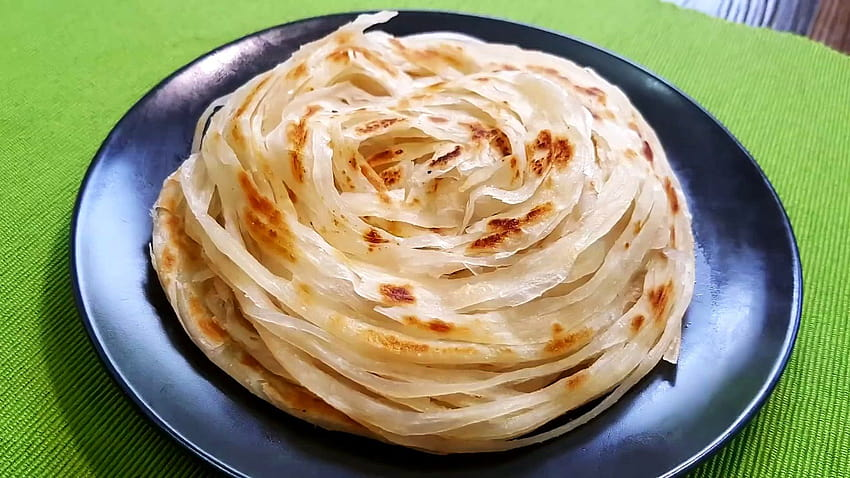

Parotta

Description
Kerala Parotta is a fluffy layered tasty flatbread made from Maida or Atta, also termed a 'flaky textured ribbon
pancake'.
This is a very popular dish commonly available in Kerala and other regions in India.
This is a yummy favorite sold by
street vendors and the dish is usually cherished with a spicy chicken,
beef or mutton curry.
It is kneading that makes
Kerala Paratha soft and flaky. The multiple layers of twisted and folded layers
of Kerala Parotta is indeed a typical sight
that you will love.
Both the young as well as the elderly love the dish.
Hot fluffy Kerala Parotta is something that should
never be missed.
Ingredients
- 2 cups All purpose flour Maida
- 1/4 cup Wheat Flour
- 1 no Egg
- 1/2 glass Milk
- 1/2 tsp Soda powder
- Sugar A little
- Salt As required
- Oil As required
Steps
- Mix together maida and wheat flour in a vessel.
- Add oil and the rest of the ingredients and make a soft dough. Make sure to pat the dough hard on a clean
surface
to make it soft.
- Cover the dough with a wet cloth for at least 4 hrs.
- Before making the parottas, knead the dough once again with hands.
- On a clean surface, rub oil.
- Pluck small balls off the dough and roll them out like chappathis but in oval shape.
- Make pleats so as to look like a hand made paper fan.
- Roll it holding on one end to form a round. This is done to get the layers. Then roll out to make it like a
chappathi.
- Put this on a pan on low flame till the kerala parotta is ready.
- Once done, use both hands and pat on the sides of the kerala parotta to get the layers.
- Serve Kerala Parotta with beef or mutton or chicken curry